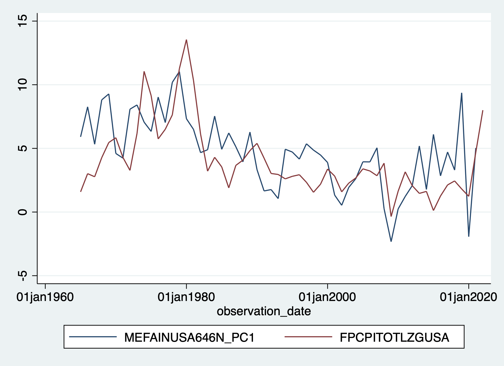
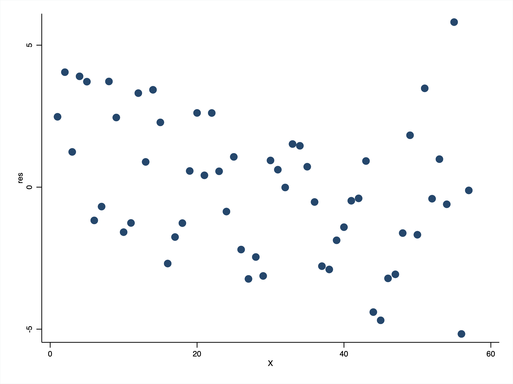
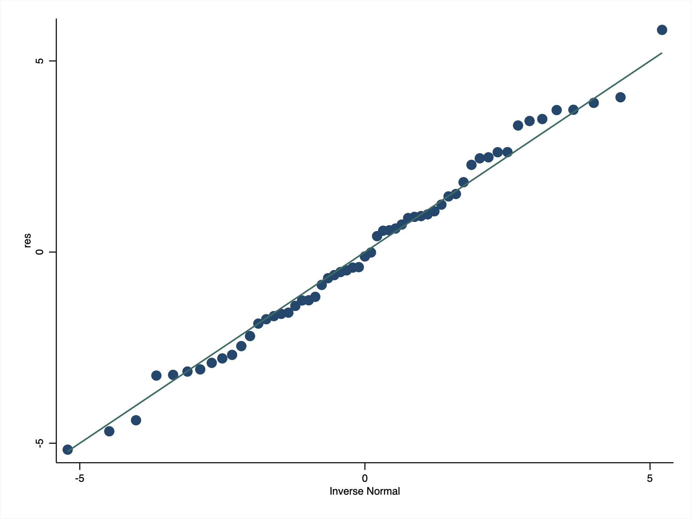

Median Family Income in the United States and Inflation
. import excel "/Users/simoneboschetti/Desktop/DATA/income vs inflation.xls", sheet("FRED Graph") cellrange(A12:C70) firstrow clear
(3 vars, 58 obs)
. tsset observation_date
Time variable: observation_date, 01jan1965 to 01jan2022, but with gaps
Delta: 1 day
. rename MEFAINUSA646N_PC1 medfamincome
. rename FPCPITOTLZGUSA inflation

. correlate
(obs=57)
| observ~e medfam~e inflat~n
-------------+---------------------------
observatio~e | 1.0000
medfamincome | -0.5873 1.0000
inflation | -0.5425 0.5265 1.0000
. reg medfamincome inflation
Source | SS df MS Number of obs = 57
-------------+---------------------------------- F(1, 55) = 21.10
Model | 130.507377 1 130.507377 Prob > F = 0.0000
Residual | 340.246163 55 6.18629388 R-squared = 0.2772
-------------+---------------------------------- Adj R-squared = 0.2641
Total | 470.75354 56 8.40631322 Root MSE = 2.4872
------------------------------------------------------------------------------
medfamincome | Coefficient Std. err. t P>|t| [95% conf. interval]
-------------+----------------------------------------------------------------
inflation | .5510056 .1199648 4.59 0.000 .3105908 .7914204
_cons | 2.554574 .5733074 4.46 0.000 1.405641 3.703508
------------------------------------------------------------------------------
. predict Py, xb
. generate res = medfamincome - Py
(1 missing value generated)
. generate X=_n
 